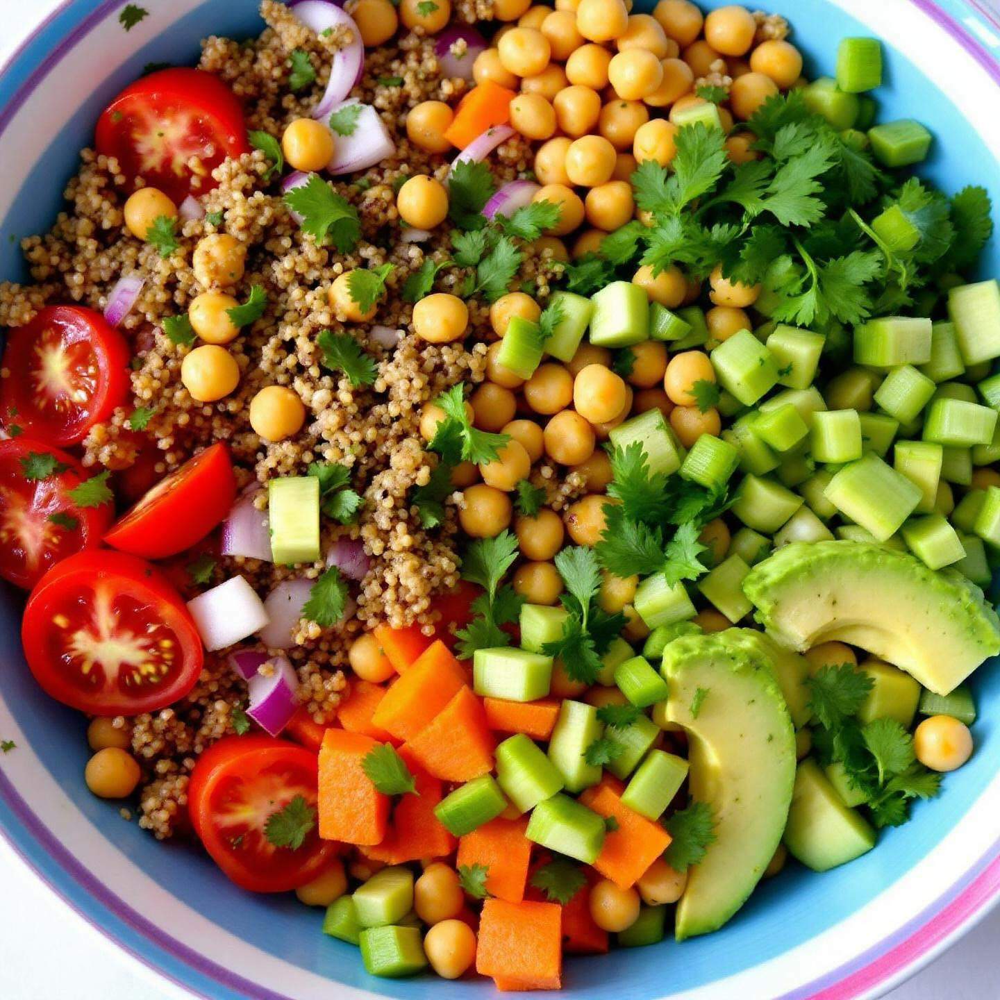

🌾 Quinoa con Ceci Secchi - Variante Piccante
Ingredienti:
- 150g di quinoa
- 150g di ceci secchi (o 300g precotti)
- 3 pomodori maturi
- 1 cipolla rossa
- 1 peperoncino fresco
- Olio extravergine d'oliva q.b.
- Sale e pepe q.b.
- Succo di limone
- Prezzemolo fresco
👨🍳 Preparazione
- Se usi i ceci secchi, mettili in ammollo per 12 ore e cuocili per 1 ora.
- Cuoci la quinoa in acqua salata per 15 minuti, poi scolala.
- Taglia i pomodori a cubetti, la cipolla a fette sottili.
- Trita il peperoncino (usa guanti!).
- In una ciotola, mescola la quinoa con ceci, pomodori e cipolla.
- Aggiungi il peperoncino, olio EVO, sale, pepe e limone.
- Guarnisci con prezzemolo fresco e servi.
💡 Consigli
Questa variante piccante è ideale per chi ama i sapori decisi. Il peperoncino accelera il metabolismo e dà un tocco di carattere al piatto. Regola la quantità di peperoncino in base alle tue preferenze.
🌾 Quinoa with Dried Chickpeas - Spicy Variant
Ingredients:
- 150g quinoa
- 150g dried chickpeas (or 300g precooked)
- 3 ripe tomatoes
- 1 red onion
- 1 fresh chili pepper
- Extra virgin olive oil to taste
- Salt and pepper to taste
- Lemon juice
- Fresh parsley
👨🍳 Preparation
- If using dried chickpeas, soak them for 12 hours and cook for 1 hour.
- Cook the quinoa in salted water for 15 minutes, then drain.
- Dice the tomatoes, slice the red onion thinly.
- Finely chop the chili pepper (wear gloves!).
- In a bowl, mix the quinoa with chickpeas, tomatoes and onion.
- Add the chili pepper, EVO oil, salt, pepper and lemon.
- Garnish with fresh parsley and serve.
💡 Tips
This spicy variant is ideal for those who love bold flavors. Chili pepper speeds up metabolism and adds character to the dish. Adjust the amount of chili according to your preferences.
🌾 Quinoa con Garbanzos Secos - Variante Picante
Ingredientes:
- 150g de quinoa
- 150g de garbanzos secos (o 300g precocidos)
- 3 tomates maduros
- 1 cebolla roja
- 1 guindilla fresca
- Aceite de oliva virgen extra al gusto
- Sal y pimienta al gusto
- Zumo de limon
- Perejil fresco
👨🍳 Preparacion
- Si utiliza garbanzos secos, pongalos en remojo durante 12 horas y cuezalos durante 1 hora.
- Cocina la quinoa en agua salada durante 15 minutos, luego escurrirla.
- Corta los tomates en cubitos, la cebolla roja en rodajas finas.
- Pique finamente la guindilla (use guantes!).
- En un bol, mezcla la quinoa con garbanzos, tomates y cebolla.
- Anade la guindilla, aceite EVO, sal, pimienta y limon.
- Decore con perejil fresco y sirva.
💡 Consejos
Esta variante picante es ideal para quienes aman los sabores intensos. La guindilla acelera el metabolismo y anade caracter al plato. Ajuste la cantidad de guindilla segun sus preferencias.
🌾 Quinoa com Grao-de-Bico Seco - Variante Picante
Ingredientes:
- 150g de quinoa
- 150g de grao-de-bico seco (ou 300g pre-cozido)
- 3 tomates maduros
- 1 cebola roxa
- 1 malagueta fresca
- Azeite extra virgem a gosto
- Sal e pimenta a gosto
- Sumo de limao
- Salsa fresca
👨🍳 Preparacao
- Se utilizar grao-de-bico seco, coloque-o de molho durante 12 horas e coza durante 1 hora.
- Cozinhe a quinoa em agua salgada durante 15 minutos, depois escorra.
- Corte os tomates em cubinhos, a cebola roxa em rodelas finas.
- Pique finamente a malagueta (use luvas!).
- Numa tigela, misture a quinoa com grao-de-bico, tomates e cebola.
- Junte a malagueta, azeite EVO, sal, pimenta e limao.
- Decore com salsa fresca e sirva.
💡 Dicas
Esta variante picante e ideal para quem gosta de sabores fortes. A malagueta acelera o metabolismo e da um toque de carater ao prato. Ajuste a quantidade de malagueta de acordo com as suas preferencias.
🌾 Quinoa mit getrockneten Kichererbsen - Scharfe Variante
Zutaten:
- 150g Quinoa
- 150g getrocknete Kichererbsen (oder 300g vorgekochte)
- 3 reife Tomaten
- 1 rote Zwiebel
- 1 frische Chili-Schote
- Natives Olivenoel extra nach Geschmack
- Salz und Pfeffer nach Geschmack
- Zitronensaft
- Frische Petersilie
👨🍳 Zubereitung
- Wenn Sie getrocknete Kichererbsen verwenden, legen Sie sie 12 Stunden ein und kochen Sie sie 1 Stunde.
- Die Quinoa in Salzwasser 15 Minuten kochen, dann abtropfen lassen.
- Die Tomaten wuerfeln, die rote Zwiebel in duenne Scheiben schneiden.
- Die Chili-Schote fein hacken (Handschuhe tragen!).
- In einer Schuessel Quinoa mit Kichererbsen, Tomaten und Zwiebel vermischen.
- Chili, natives Olivenoel, Salz, Pfeffer und Zitrone hinzufuegen.
- Mit frischer Petersilie garnieren und servieren.
💡 Tipps
Diese scharfe Variante ist ideal fuer Liebhaber von kraeftigen Aromen. Chili beschleunigt den Stoffwechsel und verleiht dem Gericht Charakter. Die Menge an Chili nach Ihrem Geschmack anpassen.
🌾 Κινόα με Ξερά Ρεβίθια - Πικάντικη Εκδοχή
Συστατικά:
- 150g κινόα
- 150g ξερά ρεβίθια (ή 300g προψημένα)
- 3 ώριμες ντομάτες
- 1 κόκκινο κρεμμύδι
- 1 φρέσκια καυτερή πιπεριά
- Έξτρα παρθένο ελαιόλαδο κατά βούληση
- Αλάτι και πιπέρι κατά βούληση
- Χυμός λεμονιού
- Φρέσκο μαϊντανό
👨🍳 Εκτέλεση
- Αν χρησιμοποιείτε ξερά ρεβίθια, μουσκέψτε τα για 12 ώρες και βράστε τα για 1 ώρα.
- Βράστε την κινόα σε αλατισμένο νερό για 15 λεπτά, μετά στραγγίστε την.
- Κόψτε τις ντομάτες σε κύβους, το κόκκινο κρεμμύδι σε λεπτές φέτες.
- Ψιλοκόψτε την καυτερή πιπεριά (φορέστε γάντια!).
- Σε ένα μπολ, αναμείξτε την κινόα με ρεβίθια, ντομάτες και κρεμμύδι.
- Προσθέστε την καυτερή πιπεριά, ελαιόλαδο, αλάτι, πιπέρι και λεμόνι.
- Γαρνίρετε με φρέσκο μαϊντανό και σερβίρετε.
💡 Συμβουλές
Αυτή η πικάντικη εκδοχή είναι ιδανική για όσους αγαπούν έντονες γεύσεις. Η καυτερή πιπεριά επιταχύνει τον μεταβολισμό και δίνει χαρακτήρα στο πιάτο. Ρυθμίστε την ποσότητα καυτερής πιπεριάς σύμφωνα με τις προτιμήσεις σας.